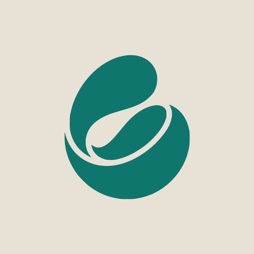

Ya en la App Store, para iPhone
¿Sin cobertura?
Audioguía
Sigue sonando.
Las audioguías descargadas
suenan en modo avión.
Lisboa
Nápoles
Bilbao
Sevilla
Viernes
Sábado
Domingo
Y el viaje,
escrito día a día.
Se paga una vez
y lo abre todo el grupo.
Descargarla es gratis.
El viaje, desde
2,99 €
Sin suscripción.

Nomad: guía de viajes

Pronto en Android
Apple, el logotipo de Apple e iPhone son marcas comerciales de Apple Inc., registradas en EE. UU. y en otros países. App Store es una marca de servicio de Apple Inc.
Enlace en el perfil